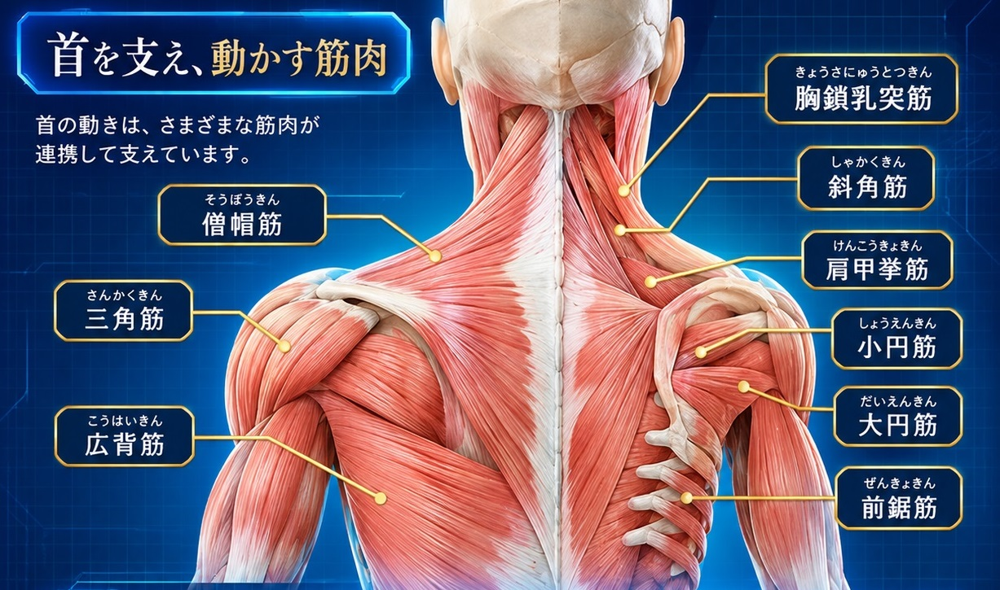

肩甲上腕関節｜球関節
上腕骨頭の球状の関節面と、肩甲骨の関節窩が向かい合う関節です。関節窩が比較的小さいため、広い可動域を持つ一方、安定性には周囲の軟部組織や筋肉の働きが重要になります。屈曲・伸展、外転・内転、内旋・外旋などの動きに関わります。
肩関節、肩甲骨、鎖骨、胸郭、背骨——それぞれが連動することで、私たちは腕を自由に動かすことができます。肩の仕組みを知ることが、身体を理解する第一歩です。
肩は、複数の関節と筋肉が協力して大きな動きを生み出す、柔軟性に富んだ構造です。
肩関節（肩甲上腕関節）は、腕をさまざまな方向へ動かせる一方、骨同士のかみ合わせだけでは安定性を保ちにくい関節です。そのため、周囲の筋肉や腱、関節包などが協力して上腕骨頭を支えています。
肩の動きには、肩甲上腕関節だけでなく、鎖骨と肩甲骨の間にある肩鎖関節、胸郭の上を肩甲骨が滑るように動く肩甲胸郭の機能も関わります。
投球動作などで肩に直接大きな力が加わる場合や、転倒時に手・腕を通じて力が伝わる場合など、肩にはさまざまな負荷がかかります。

肩の複雑な動きは、異なる特徴を持つ関節・機能的な連結が組み合わさって生まれます。

上腕骨頭の球状の関節面と、肩甲骨の関節窩が向かい合う関節です。関節窩が比較的小さいため、広い可動域を持つ一方、安定性には周囲の軟部組織や筋肉の働きが重要になります。屈曲・伸展、外転・内転、内旋・外旋などの動きに関わります。
肩甲骨の肩峰と鎖骨の外側端をつなぐ関節です。肩甲骨の位置調整に関わり、腕を動かすときの肩甲骨の滑りや回旋を助けます。
肩甲骨が胸郭の背面を滑るように動く機能的な連結です。骨同士が関節包や靭帯で直接つながった一般的な滑膜関節ではありませんが、腕を上げる動作などで重要な役割を担います。
肩まわりの骨の位置と特徴を確認しましょう。

平らな形状をしていて、胸部の背面の外側寄り、第2〜第7肋骨の高さに位置します。後面を上下に分けるような隆起を肩甲棘と呼び、その外側先端の突起が肩峰です。肩峰の下には、上腕骨頭と向かい合うカップ状のくぼみである関節窩があります。
上肢のなかでもっとも長く大きい骨です。近位端は丸い上腕骨頭となり、肩甲骨の関節窩と組み合わさって肩甲上腕関節をつくります。遠位端は前腕の骨とともに肘関節を形成します。
身体の前面上部に左右一対で位置する、ゆるやかなS字形の骨です。内側は胸骨、外側は肩甲骨の肩峰とつながり、上肢を体幹につなぐ役割や、腕と体幹の間で力を伝える役割を担います。
肩の安定性と、動きを滑らかにするために働く組織です。

関節を袋状に包む線維性の組織です。関節を覆い、関節内を保護するとともに、関節の安定性に関わります。
関節包の前方部分を補強する靭帯群です。上腕骨頭の過度な移動を抑え、肩関節の安定性を支えます。
肩峰の下にある滑液を含む袋状の組織です。腱板など周囲の組織同士の摩擦を減らし、腕を動かす際の滑走を助けます。
肩の動きは、複数の筋肉がそれぞれの方向から協力することで生まれます。

上部・中部・下部に分けられ、肩甲骨の挙上・内転・上方回旋や安定に関わります。
前部は肩関節の屈曲や内旋、中部は外転、後部は伸展や外旋に関わります。
上腕を伸展・内転・内旋させる働きがあります。
肩甲骨を内転・挙上させ、下方回旋にも関わります。
肩関節の外転を補助し、上腕骨頭の位置を保つ働きにも関わります。
上腕を外旋させ、肩関節の安定性を支えます。
上腕の外旋に関わり、肩関節の安定性を支えます。
上腕を伸展・内転・内旋させる働きがあります。
肩甲骨を外転させ、上方回旋や胸郭に沿った安定に関わります。
上腕を内旋させ、上腕骨頭を関節窩に保つ働きがあります。
上腕の内転・内旋や、屈曲の補助に関わります。
棘上筋・棘下筋・小円筋・肩甲下筋の4つは、腱板（ローテーターカフ）と呼ばれます。上腕骨頭を関節窩に引き寄せるように支え、腕を動かすときの肩関節の安定性に重要な役割を果たします。
このページは身体の構造を理解するための一般的な解説です。痛みや動かしにくさの原因を自己判断するものではありません。症状が続く場合や、外傷後に強い痛み・腫れ・動かせない状態がある場合は、医療機関にご相談ください。
画像出典：McDavid公式サイト掲載画像。画像の利用・転載条件を確認し、必要に応じて許諾を得たうえで公開してください。